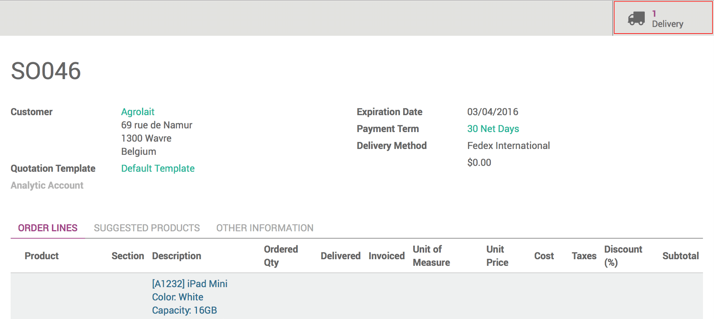
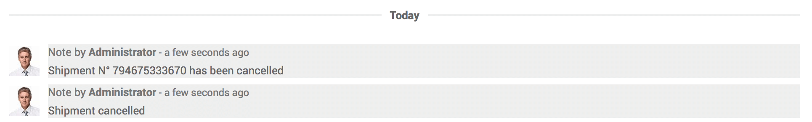

Overview
Odoo gives you the possibility to cancel a delivery method whether it has been validated to fast, it needs to be modified or for any other reason.
Some carriers are more flexible than others, so make sure to cancel your delivery order as fast as possible if it needs to be done so you don't have any bad surprise.
Sale process
Go to the Sales module, click on Sales and then on Sales Order. Then click on the sale order you want to cancel.

Click on the Delivery button, in the upper right corner of the sale order.
Now, click on the Additional info tab and you will see that next to the Carrier Tracking Reference, there is a Cancel button. Click on it to cancel the delivery.

To make sure that your delivery is cancelled, check in the history, you will receive the confirmation of the cancellation.
